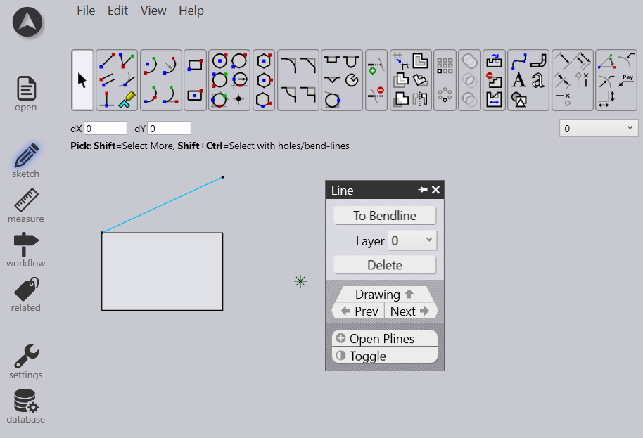
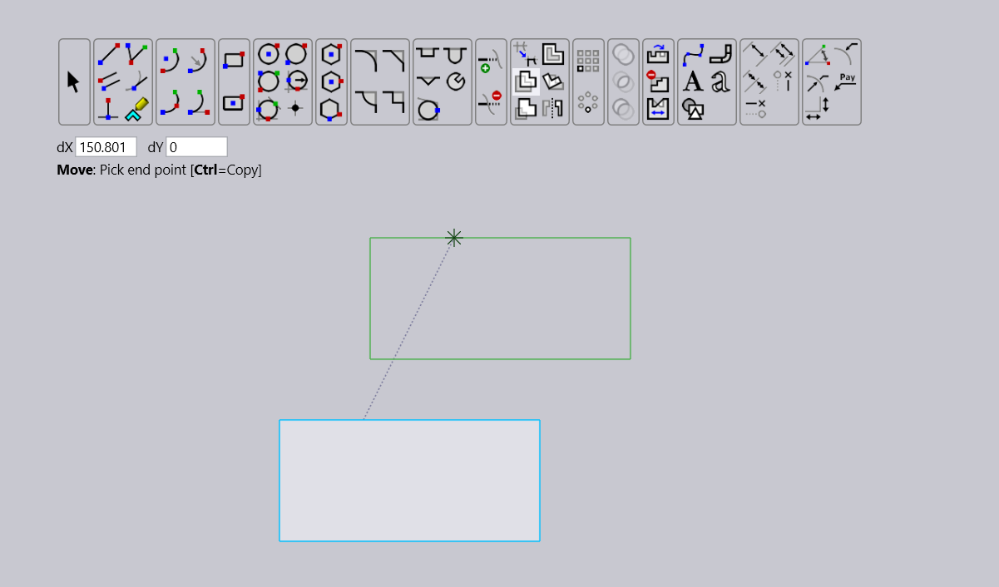
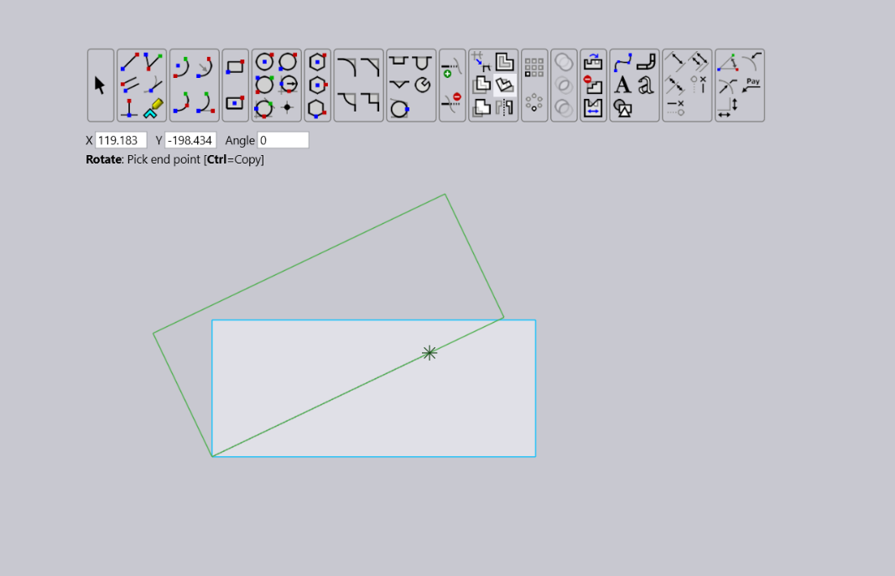
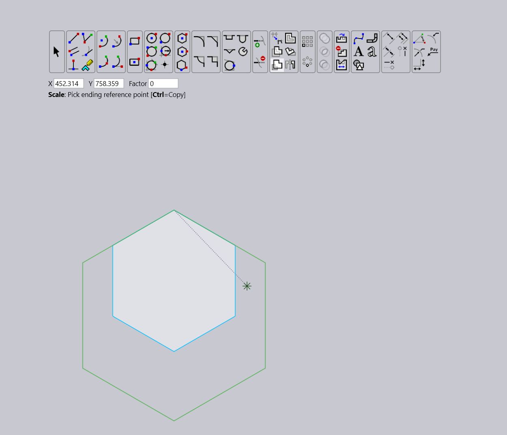
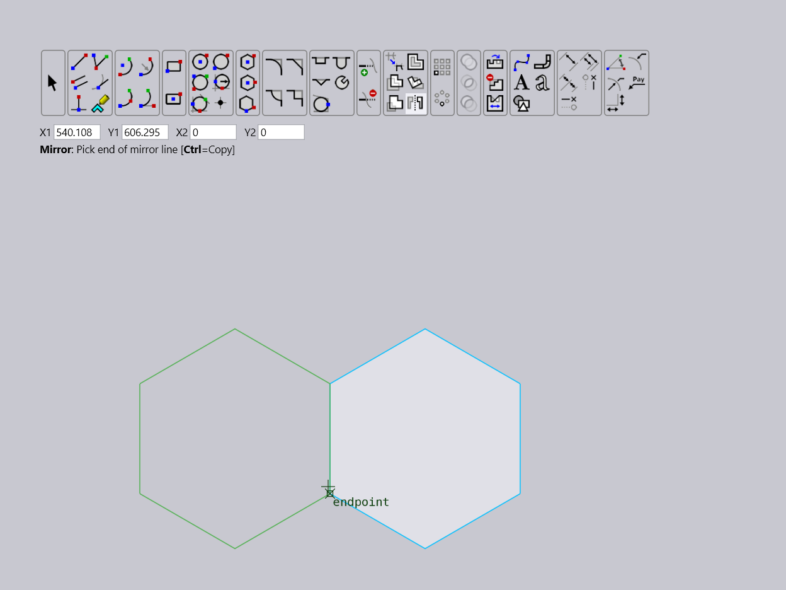
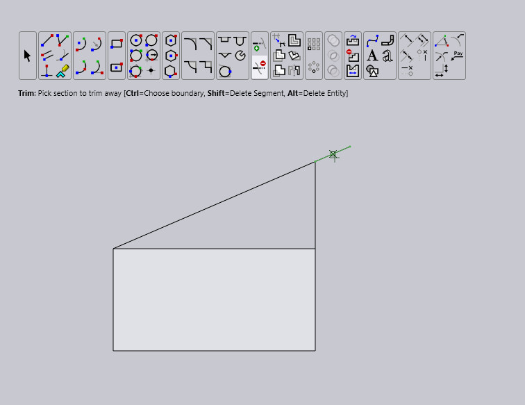
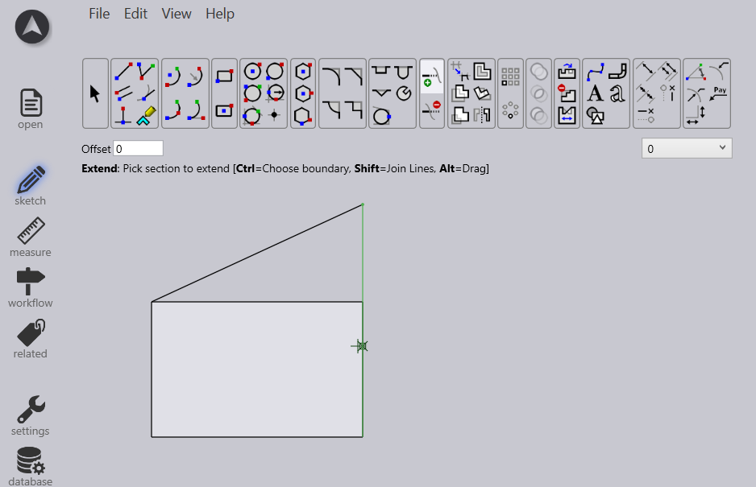

Editing Tools
Tools like Move/Copy, Rotate, and Scale allow for positional adjustments, orientation changes, and resizing of objects, maintaining design integrity. Trim/Extend tools ensure accurate trimming or extension of geometries to specified boundaries.
Select Tool
To select objects by clicking on them or dragging to create a selection box. User Interface
-
Toolbar Icon: Icon for selection rectangle.
-
Parameters: offset moved (dx,dy) specified via mouse click or coordinate input. Interaction
-
Select the entity or group of entities to be manipulated, moved, copied, rotated, or edited using various tools.

Move Tool
Move selected objects. User Interface
-
Icon for move tool or keyboard shortcut. Interaction
-
Movement of selected objects is done by entering offset in DX and DY input boxes, or by clicking two points to define the vector of movement.
-
Holding Ctrl while pressing Enter creates a copy at the new position, leaving the originals intact.
-
The tool also supports redefining the selection set without exiting the mode and can move or stretch segments of polylines based on the selection and modifier keys used.

Rotate Tool
Rotate selected objects around a specified point. User Interface
-
Icon for Rotate tool or keyboard short cut.
-
Parameters: specific points and angle Interaction
-
For precise angles, type into the Angle input box;
-
For mouse-based input, click two points. Ctrl during the first click redefines selection; Ctrl during last click creates a rotated copy.

Scale Tool
Scale selected objects by a specified factor. User Interface
-
Icon for scale tool or keyboard short cut.
-
Parameters: specific (x,y) points and scale factor Interaction
-
The centre of scaling can be any designated point, and the scale factor is entered in the Factor input box or determined by the ratio of distances from two mouse clicks.
-
Use the Ctrl key during selection to modify the set and during the final phase to create a scaled copy, retaining the original objects.

Mirror Tool
Create a mirror image of selected objects. User Interface
-
Icon for mirror tool or keyboard short cut.
-
Parameters: specific (x,y) points and reference line. Interaction
-
Two mouse clicks define the mirror line, and construction lines assist in setting up horizontal or vertical mirror lines, which are the most frequently used.
-
The example below shows an entity being mirrored about various lines.

Trim Tool
Trim intersecting lines and curves to a specified boundary. User Interface
-
Icon for the trim tool. Or keyboard shortcut Interaction
-
The Trim tool in CAD cuts segments at intersection points or removes entire segments.
-
Press Ctrl while clicking to select boundary entities for trimming.
-
Hold Shift and click to remove entire segments from polylines.

Extend Tool
Extend lines or curves to meet other objects. User Interface
-
Icon for extend tool or keyboard short cut. Interaction
-
Use Ctrl to select a boundary for extension or extend to the nearest boundary if none is selected. Hold Shift and click to join two lines.
-
Hold Alt and click to interactively resize a segment.
